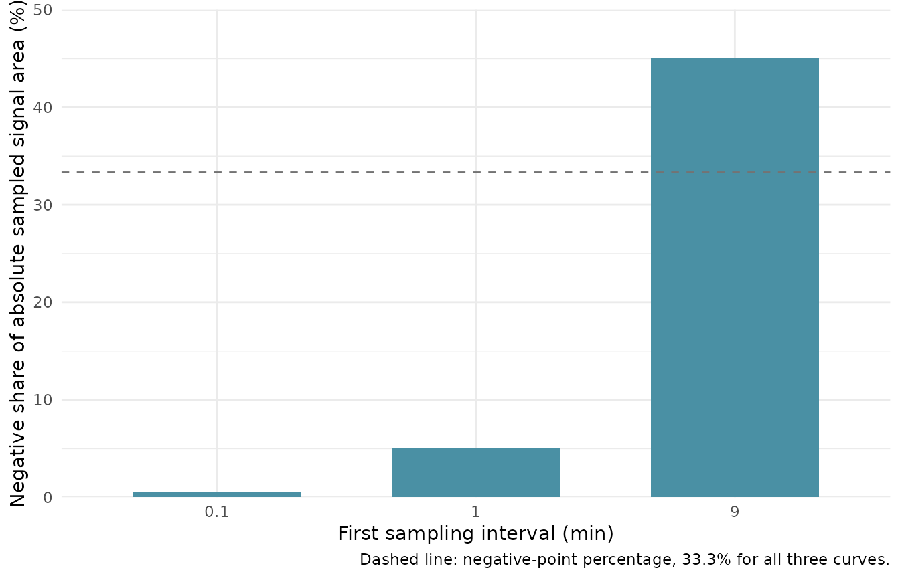

Qualify SEC detector units, delays and clipped signal
Source:vignettes/detector-qualification.Rmd
detector-qualification.RmdThis guide checks fixed synthetic software contracts for detector conversion, mass normalization, delay correction, missing samples and serialization. It does not establish detector calibration, actual flow accuracy, sample recovery, baseline suitability or instrument performance. Every declared value below is for software qualification, not a recommended method setting.
Check signed RI conversion before normalization
instrument_constant is a positive conversion gain:
multiplying the recorded signal by it gives the calibrated
refractive-index difference. Dividing that difference by
dn_dc in mL/g gives concentration in g/mL. A negative
increment can therefore turn a negative RI response into positive
concentration without taking the absolute value of the detector
trace.
The Brookhaven BI-DNDC manual describes negative refractive-index increments. The Wyatt application note explains why the appropriate value depends on the solute, solvent, temperature and wavelength. The values below are synthetic declarations.
time_min <- c(0, 1, 2, 4)
concentration_g_ml <- c(0, 0.001, 0.002, 0)
gain <- 2
input <- tibble::tibble(
sample_id = c("positive increment", "negative increment"),
dn_dc = c(0.2, -0.2)
)
input$ri <- new_measure_list(lapply(input$dn_dc, function(increment) {
new_measure_tbl(time_min, concentration_g_ml * increment / gain)
}))
ri_recipe <- recipe(~., data = input) |>
step_sec_ri(
measures = "ri", dn_dc_column = "dn_dc",
instrument_constant = gain, output_col = "concentration"
)
ri_result <- bake(prep(ri_recipe, training = input), new_data = NULL)
stopifnot(
identical(ri_result$ri, input$ri),
identical(attr(ri_result$concentration, "sec_concentration_unit", exact = TRUE),
"g/mL")
)
for (row in seq_len(nrow(input))) {
stopifnot(max(abs(ri_result$concentration[[row]]$value -
concentration_g_ml)) < 1e-14)
}This absolute RI check runs before injected-mass normalization, which
could otherwise cancel a constant gain error. The two rows recover the
declared concentration with both positive and negative
dn_dc values. No absolute value is applied to the recorded
signal.
Declare the raw elution axis and concentration units
elution_units describes the existing numeric
location coordinates. It accepts exactly
"min", "s", "mL" or
"uL"; coordinates stay unchanged. Flow is in mL/min. The
concentration step multiplies the sampled raw-axis area by the
corresponding mL-per-axis-unit factor:
elution_units |
mL per raw axis unit | Example coordinate from 1 min at 0.5 mL/min |
|---|---|---|
"min" |
flow rate | 1 min |
"s" |
flow rate / 60 | 60 s |
"mL" |
1 | 0.5 mL |
"uL" |
0.001 | 500 uL |
The table and checks below apply all four declarations to the same fixed 2 mg trace and request both output concentration units. The location vectors are constructed from the fixed minute values using the declared coordinate scale; the step itself does not rewrite them.
axis_per_minute <- c(min = 1, s = 60, mL = 0.5, uL = 500)
mL_per_axis_unit <- c(min = 0.5, s = 0.5 / 60, mL = 1, uL = 0.001)
flow_ml_min <- 0.5
injected_mass_mg <- 2
output_units <- c("mg/mL", "g/mL")
mass_checks <- list()
index <- 0L
for (axis_unit in names(axis_per_minute)) {
raw_location <- time_min * axis_per_minute[[axis_unit]]
for (concentration_unit in output_units) {
measure_data <- data.frame(case_id = "known-2-mg")
measure_data$signal <- new_measure_list(list(
new_measure_tbl(raw_location, concentration_g_ml)
))
mass_recipe <- recipe(~., data = measure_data) |>
step_sec_concentration(
measures = "signal",
injection_mass = injected_mass_mg,
flow_rate = flow_ml_min,
concentration_units = concentration_unit,
elution_units = axis_unit,
id = paste("guide_mass", axis_unit, gsub("/", "_", concentration_unit),
sep = "_")
)
mass_result <- bake(
prep(mass_recipe, training = measure_data),
new_data = measure_data
)
curve <- mass_result$signal[[1]]
unit_tag <- attr(mass_result$signal, "sec_concentration_unit", exact = TRUE)
values_mg_ml <- curve$value
if (identical(concentration_unit, "g/mL")) {
values_mg_ml <- values_mg_ml * 1000
}
trapezoid_area <- sum(abs(diff(curve$location)) *
(head(values_mg_ml, -1) + tail(values_mg_ml, -1)) / 2)
recovered_mass_mg <- trapezoid_area * mL_per_axis_unit[[axis_unit]]
expected_values <- if (identical(concentration_unit, "mg/mL")) {
concentration_g_ml * 1000
} else {
concentration_g_ml
}
stopifnot(
identical(as.numeric(curve$location), raw_location),
identical(unit_tag, concentration_unit),
isTRUE(all.equal(curve$value, expected_values, tolerance = 1e-12,
check.attributes = FALSE)),
abs(recovered_mass_mg - injected_mass_mg) < 1e-12
)
index <- index + 1L
mass_checks[[index]] <- data.frame(
elution_units = axis_unit,
concentration_unit = concentration_unit,
recovered_mass_mg = recovered_mass_mg
)
}
}
mass_table <- dplyr::bind_rows(mass_checks)
knitr::kable(mass_table, digits = 8)| elution_units | concentration_unit | recovered_mass_mg |
|---|---|---|
| min | mg/mL | 2 |
| min | g/mL | 2 |
| s | mg/mL | 2 |
| s | g/mL | 2 |
| mL | mg/mL | 2 |
| mL | g/mL | 2 |
| uL | mg/mL | 2 |
| uL | g/mL | 2 |
The recovered mass is recomputed from the baked curve in the
requested units and the declared mL-per-axis-unit factor. The exact
coordinate checks confirm that the processing step left each raw axis as
supplied. measure_record() stores an axis declaration
separately; pass that knowledge explicitly as elution_units
when building this recipe.
Check positive and negative delay direction
delay_times is always expressed in minutes and
delay_volumes in mL, independent of the raw axis. The
recipe uses flow to convert between those declarations and the axis. The
correction is corrected(x) = target(x + delta) after
conversion to the raw axis. A positive delay means the target detector
reads the signal later, so the correction samples a larger target
coordinate. A negative delay means the target reads it earlier and
samples a smaller coordinate. Interpolation leaves coordinates fixed and
returns NA outside the target’s supported range.
make_delay_input <- function(location, reference_values, target_values,
tag = "mg/mL") {
result <- data.frame(sample_id = "synthetic-delay")
result$reference <- new_measure_list(list(
new_measure_tbl(location, reference_values)
))
result$target <- new_measure_list(list(
new_measure_tbl(location, target_values)
))
attr(result$target, "sec_concentration_unit") <- tag
result
}
delay_fit <- function(data, delay_value, declaration = "time",
method = "interpolate") {
delay_recipe <- recipe(~., data = data)
arguments <- list(
recipe = delay_recipe,
reference = "reference",
targets = "target",
flow_rate = 0.5,
method = method,
elution_units = "min",
id = paste0("guide_delay_", if (delay_value < 0) "negative" else "positive")
)
if (identical(declaration, "time")) {
arguments$delay_times <- c(target = delay_value)
} else {
arguments$delay_volumes <- c(target = delay_value)
}
do.call(step_sec_detector_delay, arguments)
}
delay_location <- 0:5
reference_late <- c(0, 1, 0, 0, 0, 0)
target_late <- c(0, 0, 1, 0, 0, 0)
positive_data <- make_delay_input(delay_location, reference_late, target_late)
positive_recipe <- delay_fit(positive_data, delay_value = 1, declaration = "time")
positive_prepared <- prep(positive_recipe, training = positive_data)
serialized_prepared <- unserialize(serialize(positive_prepared, NULL))
positive_result <- bake(serialized_prepared, new_data = positive_data)
positive_curve <- positive_result$target[[1]]
stopifnot(
identical(as.numeric(positive_curve$location), as.numeric(delay_location)),
identical(positive_curve$value[1:5], reference_late[1:5]),
is.na(positive_curve$value[6]),
identical(attr(positive_result$target, "sec_concentration_unit", exact = TRUE),
"mg/mL")
)
reference_early <- c(0, 0, 1, 0, 0, 0)
target_early <- c(0, 1, 0, 0, 0, 0)
negative_data <- make_delay_input(delay_location, reference_early, target_early)
negative_result <- bake(
prep(
delay_fit(negative_data, delay_value = -0.5, declaration = "volume"),
training = negative_data
),
new_data = negative_data
)
negative_curve <- negative_result$target[[1]]
stopifnot(
is.na(negative_curve$value[1]),
identical(negative_curve$value[2:6], reference_early[2:6]),
identical(as.numeric(negative_curve$location), as.numeric(delay_location))
)
knitr::kable(data.frame(
declaration = c("delay_times = 1 min", "delay_volumes = -0.5 mL"),
interpretation = c("target arrives late", "target arrives early"),
aligned_points = c(5L, 5L)
))| declaration | interpretation | aligned_points |
|---|---|---|
| delay_times = 1 min | target arrives late | 5 |
| delay_volumes = -0.5 mL | target arrives early | 5 |
The positive-direction recipe was serialized after preparation,
restored, then baked against a current dataset. Its target column
retained the synthetic mg/mL tag. Each baked row is
processed from its current values; the recipe does not cache a prior
bake result.
Index shifting and interpolation
method = "shift" uses one integer number of points,
rounded to the nearest sample with R’s ties-to-even rule. A nonzero
index shift requires a uniform grid; a zero shift is an exact no-op on
irregular coordinates. For an irregular grid, use
method = "interpolate" to evaluate the target at
x + delta. Internal missing samples propagate through
adjacent interpolation intervals; they are not deleted and bridged.
round_location <- 0:7
round_values <- seq_along(round_location)
rounding_results <- lapply(c(1.5, 2.5), function(delay_min) {
data <- make_delay_input(
round_location,
reference_values = rep(0, length(round_location)),
target_values = round_values
)
result <- bake(
prep(delay_fit(data, delay_value = delay_min, method = "shift"),
training = data),
new_data = data
)
curve <- result$target[[1]]
shift <- as.integer(round(delay_min))
expected <- c(round_values[(shift + 1L):length(round_values)],
rep(NA_real_, shift))
stopifnot(identical(curve$value, expected))
data.frame(
delay_points = delay_min,
ties_to_even_points = shift,
first_output_value = curve$value[[1]]
)
})
knitr::kable(dplyr::bind_rows(rounding_results))| delay_points | ties_to_even_points | first_output_value |
|---|---|---|
| 1.5 | 2 | 3 |
| 2.5 | 2 | 3 |
irregular_location <- c(0, 1, 3, 6)
irregular_values <- c(0, 1, NA_real_, 4)
irregular_data <- make_delay_input(
irregular_location,
reference_values = c(10, 11, 13, 16),
target_values = irregular_values
)
irregular_recipe <- recipe(~., data = irregular_data) |>
step_sec_detector_delay(
reference = "reference",
targets = "target",
delay_times = c(target = 0.5),
flow_rate = 0.5,
method = "interpolate",
elution_units = "min",
id = "guide_irregular_interpolation"
)
irregular_result <- bake(
prep(irregular_recipe, training = irregular_data),
new_data = irregular_data
)
irregular_curve <- irregular_result$target[[1]]
stopifnot(
identical(as.numeric(irregular_curve$location), irregular_location),
isTRUE(all.equal(irregular_curve$value[[1]], 0.5, tolerance = 1e-14)),
all(is.na(irregular_curve$value[2:4]))
)
zero_recipe <- recipe(~., data = irregular_data) |>
step_sec_detector_delay(
reference = "reference",
targets = "target",
delay_times = c(target = 0),
flow_rate = 0.5,
method = "shift",
elution_units = "min",
id = "guide_irregular_zero_shift"
)
zero_result <- bake(
prep(zero_recipe, training = irregular_data),
new_data = irregular_data
)
stopifnot(identical(zero_result$target[[1]]$value, irregular_values))
irregular_index_error <- tryCatch(
bake(
prep(
delay_fit(irregular_data, delay_value = 1, method = "shift"),
training = irregular_data
),
new_data = irregular_data
),
error = identity
)
stopifnot(inherits(irregular_index_error, "error"))
shared_grid <- make_delay_input(c(0, 1, 2), c(10, 11, 12), c(0, 1, 0))
mismatch_grid <- make_delay_input(c(0, 1, 2), c(10, 11, 12), c(0, 1, 0))
mismatch_grid$target[[1]]$location <- c(0, 1.01, 2)
mismatch_error <- tryCatch(
bake(
prep(delay_fit(shared_grid, delay_value = 0.5), training = shared_grid),
new_data = mismatch_grid
),
error = identity
)
stopifnot(inherits(mismatch_error, "error"))
knitr::kable(data.frame(
location = irregular_curve$location,
original_target = irregular_values,
corrected_target = irregular_curve$value
))| location | original_target | corrected_target |
|---|---|---|
| 0 | 0 | 0.5 |
| 1 | 1 | NA |
| 3 | NA | NA |
| 6 | 4 | NA |
Reference and target must share the same exact numeric grid on every current bake row. This step aligns detector signals already sampled on one grid; it does not resample between separate reference and target grids.
Inspect clipping on the current bake rows
Mass normalization sets negative sampled values to zero. Its typed
warning has an elution_units field, and the diagnostic
areas use the incoming signal units multiplied by that raw axis unit.
These areas are not automatically signal-minutes on a seconds or volume
axis. The example captures the condition from the current bake rather
than retaining the training-time warning.
first_interval_min <- c(0.1, 1, 9)
clipping_input <- tibble::tibble(first_interval_min = first_interval_min)
clipping_input$ri <- new_measure_list(lapply(first_interval_min, function(first) {
new_measure_tbl(c(0, first, 10), c(-1, 1, 1))
}))
clipping_recipe <- recipe(~., data = clipping_input) |>
step_sec_concentration(
measures = "ri", injection_mass = 1, flow_rate = 0.5,
elution_units = "min", id = "guide_clipping_min"
)
trained_clipping <- withCallingHandlers(
prep(clipping_recipe, training = clipping_input),
measure_sec_negative_signal_clipped = function(condition) {
invokeRestart("muffleWarning")
}
)
current_clipping <- new.env(parent = emptyenv())
clipped_result <- withCallingHandlers(
bake(trained_clipping, new_data = clipping_input),
measure_sec_negative_signal_clipped = function(condition) {
current_clipping$condition <- condition
invokeRestart("muffleWarning")
}
)
clip_condition <- current_clipping$condition
diagnostics <- clip_condition$diagnostics
diagnostics$first_interval_min <- first_interval_min[diagnostics$row]
stopifnot(
identical(clip_condition$column, "ri"),
identical(clip_condition$elution_units, "min"),
nrow(diagnostics) == nrow(clipped_result),
max(abs(diagnostics$excluded_fraction - c(0.005, 0.05, 0.45))) < 1e-14
)
knitr::kable(diagnostics, digits = 4)| row | negative_points | points | positive_area | negative_area | excluded_fraction | first_interval_min |
|---|---|---|---|---|---|---|
| 1 | 1 | 3 | 9.95 | 0.05 | 0.005 | 0.1 |
| 2 | 1 | 3 | 9.50 | 0.50 | 0.050 | 1.0 |
| 3 | 1 | 3 | 5.50 | 4.50 | 0.450 | 9.0 |
positive_area is the trapezoidal area of the samplewise
positive part, and negative_area is the same calculation on
the magnitudes of negative samples. excluded_fraction is
negative_area / (positive_area + negative_area): the
negative share of absolute sampled signal area. It is
not an estimate of lost or recovered mass, nor an exact integration of
zero crossings between samples.
ggplot2::ggplot(diagnostics, ggplot2::aes(
x = factor(first_interval_min, levels = first_interval_min),
y = 100 * excluded_fraction
)) +
ggplot2::geom_col(fill = "#4A90A4", width = 0.65) +
ggplot2::geom_hline(yintercept = 100 / 3, linetype = "dashed", colour = "grey45") +
ggplot2::scale_y_continuous(limits = c(0, 50), expand = c(0, 0)) +
ggplot2::labs(
x = "First sampling interval (min)",
y = "Negative share of absolute sampled signal area (%)",
caption = "Dashed line: negative-point percentage, 33.3% for all three curves."
) +
ggplot2::theme_minimal(base_size = 11)
The warning reports one diagnostic row per curve in the current bake, including curves without negative points. Reordering curves changes row positions; associate those positions with identifiers from the same baked dataset. A high excluded share calls for investigating the input and baseline; this guide defines no universal acceptance threshold.
The warning’s axis field can be checked with the same signed trace
under every supported declaration. Its raw areas scale with the declared
numeric axis, while elution_units identifies the unit used
for those areas.
capture_axis_diagnostic <- function(axis_unit) {
scale <- axis_per_minute[[axis_unit]]
data <- data.frame(sample_id = "signed")
data$ri <- new_measure_list(list(
new_measure_tbl(c(0, 1, 2) * scale, c(-1, 1, 1))
))
recipe_to_prep <- recipe(~., data = data) |>
step_sec_concentration(
measures = "ri", injection_mass = 1, flow_rate = flow_ml_min,
elution_units = axis_unit, id = paste0("guide_clip_", axis_unit)
)
prepared <- withCallingHandlers(
prep(recipe_to_prep, training = data),
measure_sec_negative_signal_clipped = function(condition) {
invokeRestart("muffleWarning")
}
)
captured <- new.env(parent = emptyenv())
withCallingHandlers(
bake(prepared, new_data = data),
measure_sec_negative_signal_clipped = function(condition) {
captured$condition <- condition
invokeRestart("muffleWarning")
}
)
condition <- captured$condition
diagnostic <- condition$diagnostics[1, , drop = FALSE]
data.frame(
elution_units = condition$elution_units,
positive_area = diagnostic$positive_area,
negative_area = diagnostic$negative_area,
excluded_fraction = diagnostic$excluded_fraction
)
}
axis_diagnostics <- dplyr::bind_rows(lapply(
names(axis_per_minute), capture_axis_diagnostic
))
stopifnot(identical(axis_diagnostics$elution_units, names(axis_per_minute)))
knitr::kable(axis_diagnostics, digits = 6)| elution_units | positive_area | negative_area | excluded_fraction |
|---|---|---|---|
| min | 1.50 | 0.50 | 0.25 |
| s | 90.00 | 30.00 | 0.25 |
| mL | 0.75 | 0.25 | 0.25 |
| uL | 750.00 | 250.00 | 0.25 |
Carry the current unit tag into downstream LALS
This synthetic chain normalizes RI concentration, aligns it to an
LALS reference with a one-minute delay, then lets
step_sec_lals() infer the current concentration unit from
the baked RI column. The calibration and optical constants are fixed
software inputs. The expected output checks only this single-angle
calculation; it is not instrument calibration or multi-angle
analysis.
lals_location <- 0:6
lals_input <- data.frame(sample_id = "synthetic-LALS")
lals_input$ri <- new_measure_list(list(new_measure_tbl(
lals_location,
0.0001 * (1 + lals_location)
)))
lals_input$lals <- new_measure_list(list(new_measure_tbl(
lals_location,
c(5e-7, 7.5e-7, 1e-6, 1.25e-6, 1.5e-6, 1.75e-6, 2e-6)
)))
lals_recipe <- recipe(~., data = lals_input) |>
step_sec_concentration(
measures = "ri", injection_mass = 1.2, flow_rate = 0.5,
concentration_units = "mg/mL", elution_units = "min",
id = "guide_lals_mass"
) |>
step_sec_detector_delay(
reference = "lals", targets = "ri", delay_times = c(ri = 1),
flow_rate = 0.5, elution_units = "min", method = "interpolate",
id = "guide_lals_delay"
) |>
step_sec_lals(
measures = "lals", concentration_col = "ri",
optical_constant = 1e-7, calibration_constant = 2,
min_signal = 0, id = "guide_lals"
)
lals_result <- bake(
prep(lals_recipe, training = lals_input),
new_data = lals_input
)
concentration <- lals_result$ri[[1]]
scattering <- lals_result$lals[[1]]
mw <- lals_result$mw_lals[[1]]
stopifnot(
identical(attr(lals_result$ri, "sec_concentration_unit", exact = TRUE),
"mg/mL"),
identical(as.numeric(concentration$location), as.numeric(lals_location)),
identical(as.numeric(scattering$location), as.numeric(lals_location)),
identical(scattering$value, lals_input$lals[[1]]$value),
max(abs(mw$value[1:6] - 50000)) < 1e-8,
is.na(mw$value[7])
)
knitr::kable(data.frame(
time_min = lals_location,
concentration_mg_ml = concentration$value,
scattering = scattering$value,
single_angle_mw = mw$value
), digits = 8)| time_min | concentration_mg_ml | scattering | single_angle_mw |
|---|---|---|---|
| 0 | 0.2 | 5.00e-07 | 50000 |
| 1 | 0.3 | 7.50e-07 | 50000 |
| 2 | 0.4 | 1.00e-06 | 50000 |
| 3 | 0.5 | 1.25e-06 | 50000 |
| 4 | 0.6 | 1.50e-06 | 50000 |
| 5 | 0.7 | 1.75e-06 | 50000 |
| 6 | NA | 2.00e-06 | NA |
The last molecular-weight point is NA because the
positive delay requests a target value beyond the supported RI range.
The scattering curve and location vectors remain unchanged, and the unit
tag survives the delay operation for the downstream LALS
calculation.